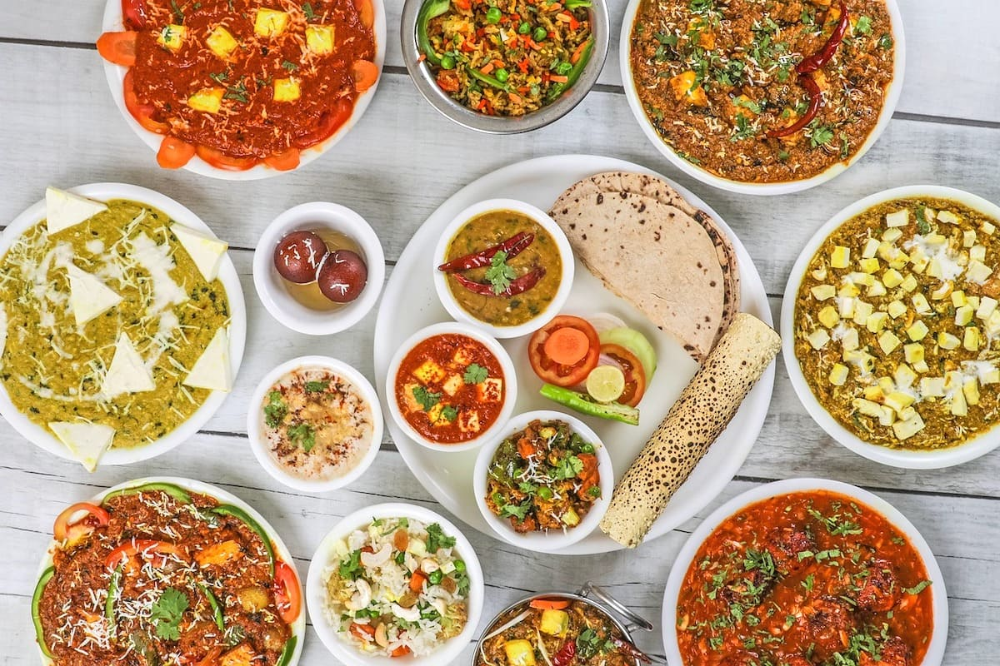

North Indian Cuisine
North Indian cuisine is known for its rich and creamy dishes, heavily influenced by Persian and Mughal cooking styles. Popular items include:
- Butter Chicken - Originating from Delhi, Butter Chicken is a creamy and mildly spiced chicken curry that has become a favorite worldwide. The dish was created by accident when leftover chicken was mixed with a rich tomato gravy with butter and cream at Moti Mahal restaurant in the 1950s. The chicken is marinated in yogurt and spices, then cooked in a tandoor (clay oven) before being simmered in the gravy. It is popular for its rich flavor and velvety texture, often enjoyed with naan or rice.
- Paneer Tikka - Paneer Tikka is a vegetarian alternative to chicken tikka, originating from the Indian subcontinent. It consists of marinated paneer (Indian cottage cheese) cubes grilled to perfection, served as an appetizer or with a main course. The paneer is marinated in a mixture of yogurt, spices, and lemon juice, then skewered and grilled until slightly charred. It is especially popular in Punjab and widely enjoyed during festivals and gatherings.
- Naan - Naan is a soft, fluffy bread cooked in a tandoor, perfect for scooping up curries and gravies. It originated in the Indian subcontinent and Persia, and is a staple in North Indian cuisine. The dough is made from refined flour, yogurt, and yeast, which gives it a light, airy texture. It is often brushed with butter or garlic for added flavor and can be found in various forms across North India, especially in Punjab and Delhi.
- Rogan Josh - Rogan Josh is an aromatic lamb curry with a rich sauce, flavored with spices like cardamom and cinnamon. It has its roots in Persian cuisine and was brought to Kashmir by the Mughals. The dish's name means "red juice," referring to the vibrant color of the gravy, which comes from the use of dried Kashmiri red chilies. The meat is slow-cooked to absorb the deep flavors of the spices, making it a staple in Kashmiri cuisine.
- Chole Bhature - Chole Bhature is a popular North Indian dish consisting of spicy chickpeas (chole) served with deep-fried bread (bhature). It is commonly eaten for breakfast or lunch and is particularly popular in Punjab, Delhi, and Haryana. The chickpeas are cooked in a spicy tomato-based sauce, while the bhature is made from refined flour dough that is fermented before frying, resulting in a fluffy, crispy bread. It is often accompanied by pickles and yogurt.